Introduction
Ce rapport accompagne le relevé d'audit effectué sur le site « esch.lu ».
La méthodologie d'audit employée repose sur le référentiel RGAA 4.1, consultable à l'adresse suivante : https://accessibilite.public.lu/fr/rgaa4.1/criteres.html.
L'audit a été réalisé au moyen de l'utilisation de navigateurs web et d'outils spécialisés. Des tests de restitution ont également été effectués conformément à la base de référence définie par le RGAA 4.1.
Échantillon
L'audit a porté sur un échantillon de 15 pages pour le niveau double A (AA) :
Environnement de test (base de référence)
Quelques critères RGAA, notamment ceux de la thématique JavaScript, incluent des tests de restitution à effectuer sur des technologies d'assistance associées à des navigateurs et des systèmes d'exploitation. Pour qu'un dispositif HTML / WAI-ARIA ou son alternative soit considéré comme compatible avec l'accessibilité, il faut qu'il soit pleinement fonctionnel, en termes de restitution et de fonctionnalités sur certaines combinaisons. Vous trouverez une explication détaillée de cet environnement de tests dans le document du RGAA 4.1.
Nous détaillons ci-dessous la base de référence utilisée pour réaliser les tests de restitution des composants du site.
Environnement de test – ordinateur
| Technologie d'assistance | Navigateur |
|---|---|
| NVDA 2021.2 | Firefox 92.0.2 |
| JAWS 2020 | Internet Explorer 11 |
| VoiceOver | Safari 14.1.2 |
Environnement de test — mobile
| Système d'exploitation | Technologie d'assistance | Navigateur |
|---|---|---|
| Android 11 | TalkBack (dernière version) | Chrome 94 |
Accessibilité des pages auditées
Le site présente un niveau général d'accessibilité faible.
Le niveau moyen de conformité relevé atteint 33,33 % de conformité sur l'ensemble des pages auditées, avec 35,90 % de conformité au niveau simple A (A) et 26,67 % de conformité au niveau double A (AA).
Le site est non conforme.
Conformité RGAA 4.1 du site
| Conforme | Non conforme | |
|---|---|---|
| A | 35,90% | 64,10% |
| AA (légal) | 33,33% | 66,67% |
Note sur le calcul de conformité
La conformité globale (Tableau « Conformité RGAA 4.1 ») est calculée de la manière suivante : C / (C+NC). C est le nombre de critères conformes et NC le nombre de critères non conformes.
C'est ce nombre qui constitue la référence légale. Il représente le taux de conformité de l'échantillon.
Il est normal que le taux de conformité global diffère sensiblement du taux de conformité par page. En effet, un critère NC (non conforme) sur une page rend le critère non conforme sur l'ensemble de l'échantillon.
Pour qu'un site soit conforme (100 % des critères applicables sont conformes au niveau AA), il est nécessaire que le taux de conformité par page équivaille à 100 %.
Conformité pour chaque niveau
| Conforme | Non conforme | |
|---|---|---|
| A | 35,90% | 64,10% |
| AA | 26,67% | 73,33% |
Moyenne par pages
| Nº page | Titre de la page | %C |
|---|---|---|
| P01 | Accueil | 45,71 |
| P02 | Contact | 66,67 |
| P03 | Mentions légales | 77,78 |
| P04 | Plan du site | 80,00 |
| P05 | Résultats de recherche (mot recherché: culture) | 80,00 |
| P06 | Article (A la une) | 52,63 |
| P07 | Événement (Que faire à Esch?) | 51,35 |
| P08 | Les lieux d'Esch | 81,82 |
| P09 | Détail lieux | 92,86 |
| P10 | Se déplacer | 68,97 |
| P11 | Gaalgebus | 96,00 |
| P12 | Chantiers et alertes | 58,06 |
| P13 | Agenda | 75,00 |
| P14 | Actualités (City Life) | 92,00 |
| P15 | Actualités (Administration) | 92,00 |
Moyenne par thématiques
| Thématiques | C | NC |
|---|---|---|
| Images | 0% | 100% |
| Cadres | NA | NA |
| Couleurs | 0% | 100% |
| Multimédia | NA | NA |
| Tableaux | 50% | 50% |
| Liens | 0% | 100% |
| Script | 0% | 100% |
| Eléments obligatoires | 37,50% | 62,50% |
| Structuration | 66,67% | 33,33% |
| Présentation | 91,67% | 8,33% |
| Formulaires | 40,00% | 60,00% |
| Navigation | 44,44% | 55,56% |
| Consultation | 50,00% | 50,00% |
Impacts utilisateurs
Les principales personnes impactées sont les personnes aveugles et celles qui naviguent au clavier. Les problèmes liés aux scripts, à l'API ARIA et aux formulaires rendent parfois difficile l'utilisation du site par ces utilisateurs.
Note sur le relevé des non-conformités
Ne sont cités dans ce rapport que quelques exemples issus du relevé des non-conformités.
De plus, toutes les occurrences d'une non-conformité ne sont pas listées dans le relevé. Par exemple : pour les liens sans intitulé, le relevé mentionne quelques occurrences, mais ne les cite pas tous.
Avis
L'accès à l'information semble correct dans l'ensemble, mais la mauvaise implémentation de certains éléments souvent présents dans les pages empêche une bonne navigation dans l'ensemble du site pour certains utilisateurs.
Les non-conformités les plus bloquantes pour les utilisateurs concernent :
- L'accès impossible à certains contenus, notamment les sous-onglets du menu ;
- Une structure de page incorrecte (balise de structuration, landmarks et absence de titrage) ;
- Des composants qui déclenchent des actions, mais qui ne sont pas implémentés comme des boutons ;
- Les champs de formulaires qui n'ont pas toujours d'étiquette.
Ce sont donc ces points qui devront nécessiter une attention toute particulière et qui demanderont le plus d'efforts.
Annexe technique
Images
Recommandation
Donner à chaque image porteuse d'information une alternative textuelle pertinente et une description détaillée si nécessaire. Lier les légendes à leurs images. Remplacer les images textes par du texte stylé lorsque c'est possible.
Images de décoration
Le site contient des images de décoration qui ne sont pas correctement identifiées, soit parce qu'elles ont une alternative renseignée, soit parce qu'il manque les attributs nécessaires pour qu'elles soient ignorées par les technologies d'assistance.
Ces images n'apportent aucune information et peuvent causer des problèmes de compréhension pour les aveugles et les grands malvoyants qui vont écouter les contenus avec un lecteur d'écran.
- Dans le cas d'une image insérée avec la balise
img, mettre unalt="". - Dans le cas d'une image insérée avec la balise
svg, mettre une propriété ARIAaria-hidden="true".
Constats sur le site
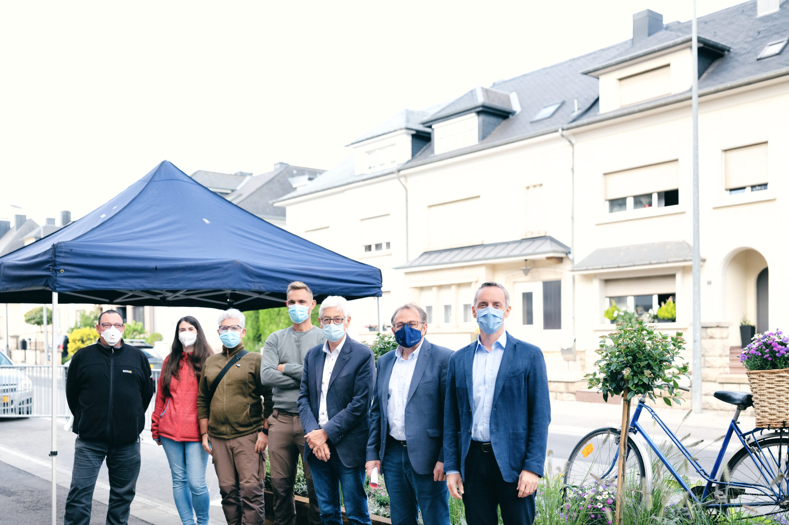Dans la page Article à la Une, les images de décoration présentes dans l'article n'ont pas d'attribut alt. Même chose dans la page Événement.
Couleurs
Recommandation
Ne pas donner l'information uniquement par la couleur et utiliser des contrastes de couleurs suffisamment élevés pour les textes et les composants d'interface.
Contrastes des textes
Plusieurs couleurs présentent un rapport de contraste insuffisant, ce qui peut poser problème aux grands malvoyants et aux déficients visuels qui ont des difficultés à percevoir les couleurs ou les contrastes.
Rapports de contrastes définis par le RGAA
- Pour les textes qui ont une taille de police calculée inférieure à 24px sans effet de graisse ou une taille de police calculée inférieure à 18,5px avec effet de graisse, le rapport de contraste entre la couleur du texte (y compris le texte en image) et son arrière-plan doit être de 4.5:1, au moins.
- Pour les textes qui ont une taille de police calculée supérieure ou égale à 24px sans effet de graisse ou une taille de police calculée supérieure ou égale à 18,5px avec effet de graisse, le rapport de contraste entre la couleur du texte (y compris le texte en image) et son arrière-plan doit être de 3:1, au moins.
Vous pouvez foncer les couleurs pour obtenir le rapport de contraste exigé.
Si la charte graphique ne peut être modifiée, fournissez une méthode aux utilisateurs pour consulter le site avec des contrastes suffisants. Ceci peut être réalisé simplement avec une fonctionnalité JavaScript et une surcharge CSS des couleurs.
Vous pouvez voir un exemple de ce type de mécanisme sur le site sncf.com. Dans les réglages d'accessibilité, vous trouverez une option qui permet d'afficher le site avec des contrastes renforcés et inversés.
Constats sur le site
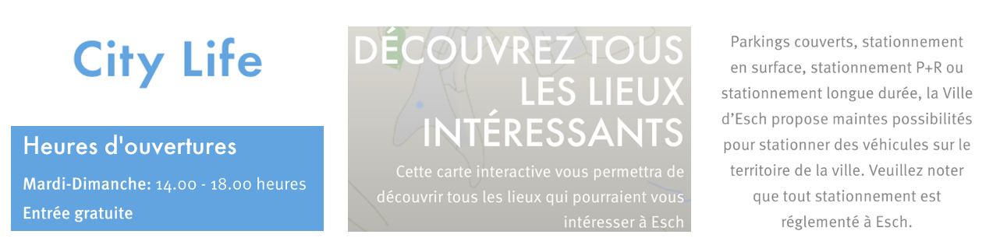Les textes en bleu clair (#4DA5E4) sur le fond blanc et inversement (ratio de 2.7), les textes sur les images de fond (ratio de 2.6) ou encore les textes en gris (#868686) sur fond blanc (ratio de 3.6) ne sont pas suffisamment contrastés.
Contraste des composants d'interface
Les composants d'interface, les illustrations porteuses d'information ou encore les mises en couleurs porteuses d'information doivent être suffisamment contrastés pour être perçus par les utilisateurs ayant des troubles de perception des couleurs. Par exemple, une icône porteuse d'information devra avoir un rapport de contraste avec la couleur de fond de 3. De même, pour un champ de saisie de formulaire, dont la zone active est matérialisée par sa bordure, alors la couleur de cette bordure devra avoir un rapport de contraste de 3 avec la couleur de fond de la page.
Constats sur le site

Les différentes icônes en bleu clair (#4DA5E4) sur fond blanc et inversement (ratio de 2.7), les astérisques du formulaire de contact en orange #F88604 sur fond blanc (ratio de 2.5), ou encore les flèches jaunes #EEE006 sur fond blanc (ratio de 1.4) ne sont pas suffisamment contrastés.
Tableaux
Recommandation :
Donner un résumé à chaque tableau de données complexe, s'assurer que pour chaque tableau de données ayant un titre, ce titre est pertinent, identifier clairement les cellules d'en-tête, utiliser un mécanisme pertinent pour lier les cellules de données aux cellules d'en-tête. Pour chaque tableau de mise en forme, veiller à sa bonne linéarisation.
Tableaux de mise en forme
La restitution des tableaux peut poser problème pour les personnes aveugles, car les technologies d'assistance tentent d'optimiser la navigation dans les tableaux, en modifiant par exemple le comportement des flèches de direction pour circuler plus facilement entre les cellules.
Dans un tableau de données, cela est utile et correspond au format de données tabulaires, mais dans un tableau de mise en forme, ce comportement est problématique et peut venir perturber le parcours des informations.
L'API ARIA propose une propriété (role="presentation") qui permet d'annuler la sémantique des éléments restitués.
Constats sur le site
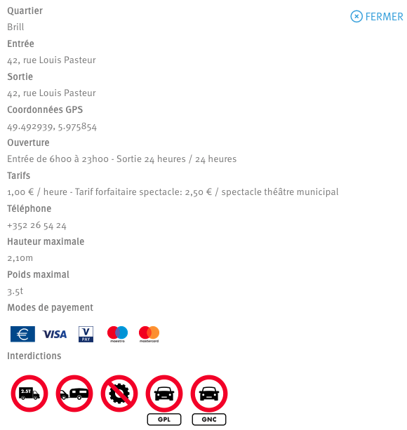Dans les blocs « plus d'informations » de la page Se déplacer, des tableaux de mise en forme sont présents, mais la propriété ARIA (role="presentation") n'est pas implémentée.
Liens
Recommandation :
Donner des intitulés de lien explicites, grâce à des informations de contexte notamment, utiliser le titre de lien le moins possible. S'assurer que le nom visible est contenu dans le nom accessible.
Pertinence des intitulés
Un lien possède généralement un intitulé et un contexte. L'intitulé est le texte présent dans la balise <a> (ou la valeur de l'attribut alt de l'image dans le cas d'un lien-image) et le contexte du lien est représenté par le titre qui précède, le titre du lien (l'infobulle) ou tout simplement le texte dans lequel il est inséré.
Pour être considéré comme pertinent, l'intitulé d'un lien doit permettre de comprendre sa destination en prenant en compte son contexte.
Constats sur le site
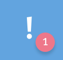Dans les toolbars, une mention « 1 » est visible. Visuellement, il est facile de constater qu'il s'agit du nombre d'alertes, mais il serait plutôt recommandé dans ce cas de proposer un intitulé plus pertinent pour les lecteurs d'écran, comme « 1 alerte ».
Présence d'intitulés
Un lien doit toujours posséder un intitulé permettant à l'utilisateur de comprendre sa destination. Les liens contenant uniquement des objets graphiques (images, icônes, etc.) posent souvent problème pour les personnes aveugles.
Pour ces liens, la technique pour fournir un intitulé dépend des cas :
- Si ces liens-images sont construits avec des balises images (
<img />), renseignez l'alternative de l'image (par exemple :<a href="https://twitter.com/example"><img src="path/to/img/png"alt="Suivez-nous sur Twitter" /></a>) - Si ces liens-images sont construits avec des balises SVG (
<svg>), alors ajoutez sur cette balise unrole="img"pour indiquer aux lecteurs d'écran qu'il s'agit bien d'une image et un intitulé pararia-label="Suivez-nous sur Twitter".
Constats sur le site
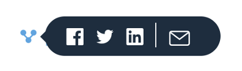Dans la page Article à la une, les liens de partage sur les réseaux sociaux n'ont pas d'intitulé.
Scripts
Recommandation :
Donner si nécessaire à chaque script une alternative pertinente. Rendre possible le contrôle de chaque code script au moins par le clavier et la souris et s'assurer de leur compatibilité avec les technologies d'assistance. Identifier les messages de statut lorsque c'est nécessaire.
Utilisation des boutons et des liens
Pour les aveugles et les grands malvoyants qui utilisent un lecteur d'écran, ce manque de distinction claire entre les liens et les boutons peut poser de graves problèmes.
Ainsi, un bouton implémenté sous la forme d'un lien qui déclenche une action de la page, risque de perturber l'utilisateur qui s'attendra au chargement d'une nouvelle page.
De manière générale, les liens devraient être réservés à l'affichage d'une nouvelle page ou la création de liens d'accès rapide dans le contenu. Dans tous les autres cas, l'emploi d'un bouton d'action est plus pertinent.
Enfin, chaque bouton doit avoir un nom accessible défini, soit par l'intermédiaire d'un texte (visible ou positionné hors écran) ou d'une propriété title, aria-label ou aria-labelledby.
Constats sur le site
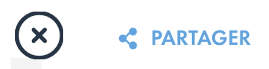De nombreux éléments ne sont pas implémentés comme des boutons, comme le bouton de fermeture des différents panneaux ou encore le bouton de partage sur les réseaux sociaux.
Éléments interactifs inaccessibles au clavier
Si un élément ne peut pas recevoir le focus ou n'est pas totalement utilisable au clavier, les utilisateurs pour lesquels le clavier est le seul moyen de naviguer seront bloqués.
Constats sur le site
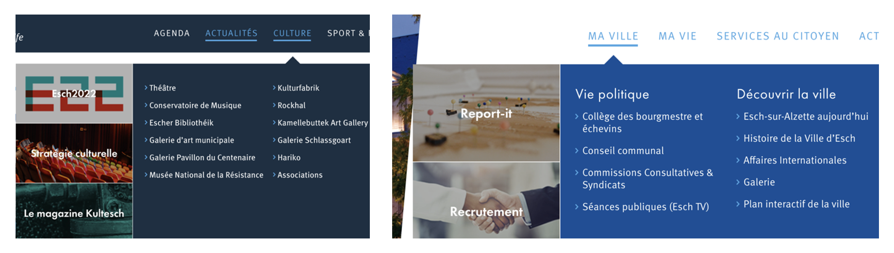Les sous-onglets du menu des différents sites ne sont pas du tout atteignables au clavier.
Fenêtres modales
Constats sur le site
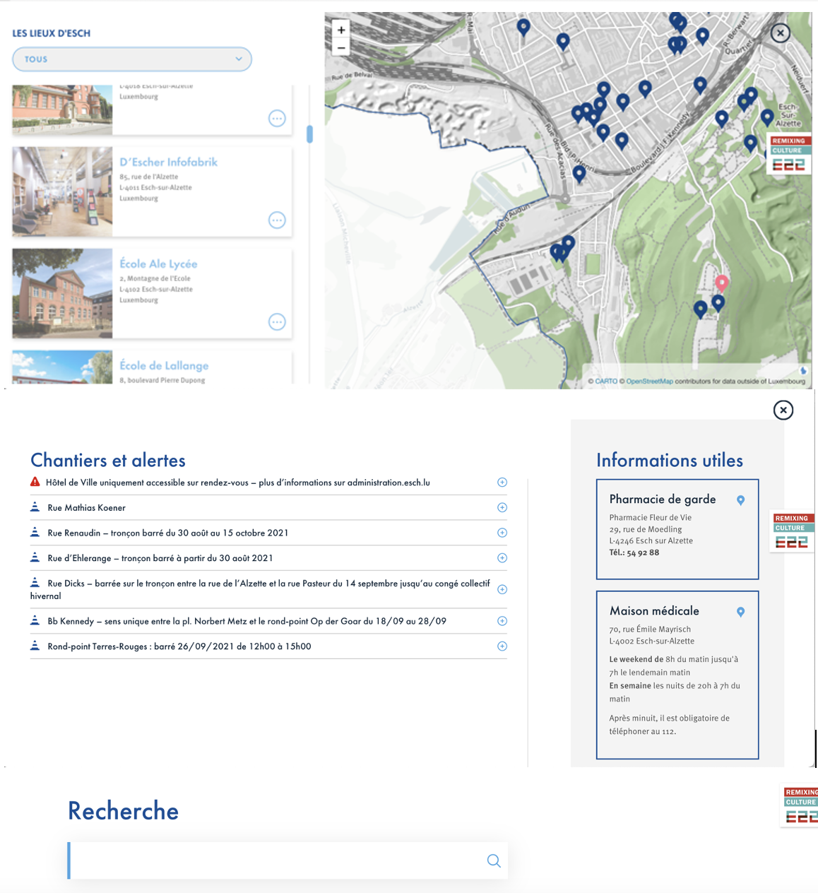Les différents panneaux (panel search, panel alerts, panel map et panel traffic) doivent être implémentés comme des fenêtres modales.
Gestion de la visibilité de zones
Le site possède des fonctionnalités d'affichage ou de masquage des zones de contenus. L'état affiché/masqué du contenu additionnel doit pouvoir être disponible pour les technologies d'assistance afin que les utilisateurs aveugles accèdent à cet état.
Pour ce type d’élément, l’implémentation du motif ARIA Disclosure est recommandée.
Constats sur le site
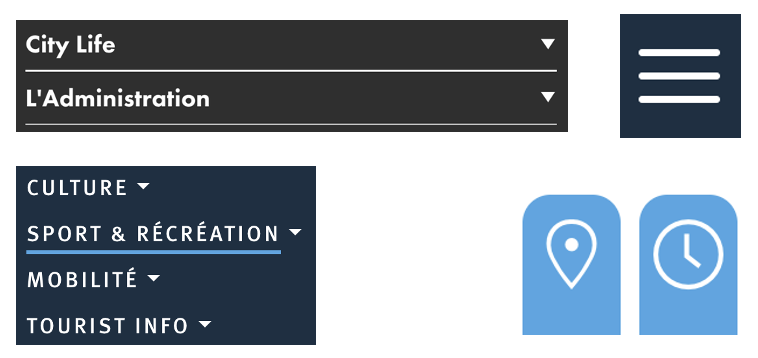Les éléments du pied de page « City Life » et « L'Administration », les différents boutons d'ouverture du menu et dans le menu en mode réduit, ou encore les éléments qui affichent la carte et les heures d'ouverture sur la page d'accueil doivent implémenter le motif de conception ARIA Disclosure, qui permet de gérer l'affichage et le masquage de ces zones.
Éléments obligatoires
Recommandation
Vérifier que chaque page web a un code valide selon le type de document, un titre pertinent et une indication de langue par défaut. Vérifier que les balises ne sont pas utilisées uniquement à des fins de présentation, que les changements de langues et de direction de sens de lecture sont indiqués.
Indication de langue
Les lecteurs d'écran utilisent les indications de langue pour vocaliser le contenu dans la langue définie. La page doit contenir une définition de langue principale (généralement sur l'élément html).
Ensuite, les éléments de langue étrangère présents dans le contenu doivent être signalés. Si on trouve dans la page des termes absents du dictionnaire de la langue principale de la page, il faut les identifier afin que le lecteur d'écran les restitue dans la langue appropriée. En effet, une mauvaise prononciation pourrait mener à des incompréhensions pour les utilisateurs qui reposent uniquement sur des restitutions orales. Les noms propres sont exclus de cette obligation.
Constats sur le site
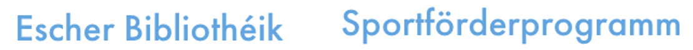Dans les pages, plusieurs termes sont en luxembourgeois (« Bibliothéik », « Sportförderprogramm »…) mais ceux-ci ne sont pas signalés au lecteur d'écran.
Validité du code
Les technologies d'assistance, comme les lecteurs d'écran ou les systèmes de contrôle à la voix, s'appuient sur le code des pages pour générer les restitutions et les interactions avec l'utilisateur. Un lecteur d'écran va exploiter le code HTML fourni par le navigateur et les informations accessibles au moyen des API d'accessibilité du système.
Si le code comporte des erreurs (balises mal fermées par exemple), il y a un risque que les fonctionnalités du lecteur d'écran soient impactées, comme la navigation de lien en lien par exemple.
Pour vérifier la conformité d'une page, vous pouvez utiliser le validateur mis à disposition par le W3C.
Constats sur le site
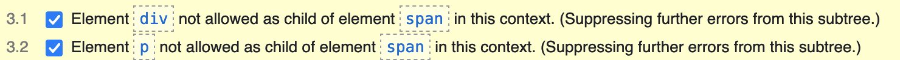Dans le code de la page Article à la une, le validateur indique des erreurs concernant une mauvaise imbrication de certaines balises.
Dans le code de la page Article à la une, le validateur indique des erreurs concernant une mauvaise imbrication de certaines balises.
Balises utilisées à des fins de présentation
Les éléments de structure HTML ont chacun une sémantique particulière (paragraphe, titre, image, lien, etc.). Si les éléments sont mal employés (détournés de leur utilité première), cela peut poser des problèmes aux utilisateurs qui naviguent à l'aide d'une technologie d'assistance (lecteur d'écran, plug-in…). En effet, les technologies d'assistance disposent de raccourcis permettant de naviguer rapidement entre certains types d'éléments (paragraphes, titres, listes, etc.). Si ces éléments sont mal employés, les utilisateurs ne peuvent pas utiliser ces fonctionnalités de repère et de navigation dans le contenu.
Constats sur le site
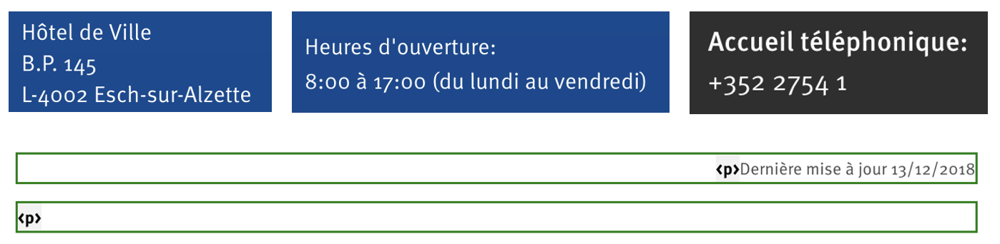Dans la page d'accueil, on note la présence de textes qui ne sont pas entourés par des balises de structuration : « Hôtel de Ville B.P. 145 L-4002 Esch-sur-Alzette », « Heures d'ouverture: 8:00 à 17:00 (du lundi au vendredi) » ou encore « Accueil téléphonique: +352 2754 1 ».
On trouve également des paragraphes vides, comme en bas de la page Mentions légales.
Structuration de l'information
Recommandation
Utiliser des titres, des listes, des abréviations et des citations pour structurer l'information. S'assurer que la structure du document est cohérente.
Titres
Le titrage des contenus est une étape importante dans la structuration de ces contenus. Cela répond à deux besoins :
- identifier rapidement un contenu recherché ;
- naviguer rapidement dans le contenu en se déplaçant de titre en titre.
Un titrage correct fournit à l'utilisateur d'un lecteur d'écran un plan du document et lui permet de naviguer de titre en titre pour se déplacer plus rapidement dans le contenu de la page.
Pour valider la structure de votre page, vous pouvez utiliser l'extension Firefox HeadingsMap. Lorsque l'extension est active, sélectionnez l'onglet « Headings » et vérifiez la cohérence et l'imbrication des titres.
Constats sur le site
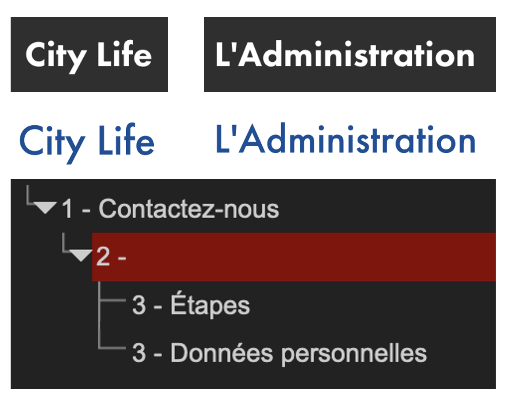Dans le pied de page ou dans le Plan du site, les textes« City life » et « L'Administration » devraient être implémentés comme des titres. Aussi, des titres vides sont parfois présents, notamment à la page Contact, où l'on trouve une balise h2 vide.
Structure du document
L'utilisation correcte des balises HTML5 et des landmarks ARIA va permettre d'enrichir la restitution pour les utilisateurs aveugles qui ne perçoivent pas les mises en forme : la navigation principale ne sera plus perçue simplement comme une liste de liens, elle sera restituée à l'utilisateur comme un élément de navigation, par l'intermédiaire du lecteur d'écran qui annoncera « région » ou « repère ».
De plus, ces marqueurs sémantiques vont également constituer des éléments de navigation rapide dans la page. Grâce à un raccourci clavier, certains utilisateurs vont pouvoir naviguer plus rapidement entre les régions qui auront été ainsi identifiées.
Constats sur le site
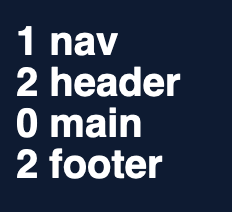Il manque la balise main dans les différents gabarits (esch.lu, formulaires.esch.lu, citylife.esch.lu et administration.esch.lu).
Présentation de l'information
Recommandation
Utiliser des feuilles de styles pour contrôler la présentation de l'information. Vérifier l'effet de l'agrandissement des tailles des caractères sur la lisibilité. S'assurer que les liens sont correctement identifiables, que la prise de focus est signalée, que l'interlignage est suffisant et donner la possibilité à l'utilisateur de contrôler la justification des textes. S'assurer que les textes cachés sont correctement restitués et que l'information n'est pas donnée uniquement par la forme ou la position d'un élément. S'assurer que les contenus sont lisibles et utilisables dans une fenêtre de largeur réduite. Veiller à ce que l'application de paramètres typographiques n'entraîne pas la perte de contenu ou de fonctionnalité. S'assurer que les contenus qui apparaissent au survol et à la prise de focus puissent être contrôlés par l'utilisateur.
Utilisation de CSS exclusivement
Certains utilisateurs qui présentent des troubles de la lecture (personnes dyslexiques par exemple), vont avoir besoin d'adapter la présentation des pages avec leurs propres mises en forme. Cela est possible sans difficulté si le site web utilise exclusivement les feuilles de styles CSS pour réaliser les mises en forme. Cependant, l'utilisation d'attributs et balises HTML de mise en forme rend ces adaptations plus compliquées, sinon impossibles.
Le RGAA donne la liste des attributs et balises qu'il est interdit d'utiliser.
Constats sur le site
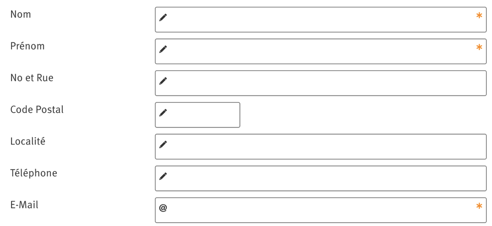Des attributs size sont présents dans les champs de formulaire de la page Contact, empêchant les utilisateurs qui en ont besoin d'appliquer des adaptations de présentation.
Contenu visible sans les feuilles de styles
Des contenus informatifs insérés avec CSS (avec des images de fond contenant du texte en image) peuvent ne pas être restitués par les lecteurs d'écran ou les systèmes de loupes vocalisés.
Constats sur le site
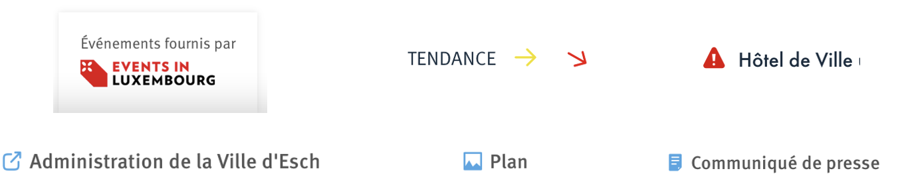De nombreuses images et icônes sont insérées avec CSS, comme l'image « Événements fournis par Events in Luxembourg » à la page Agenda, les astérisques dans la page Contact, les flèches des tendances dans la page Se déplacer ou encore l'icône d'alerte, de documents, photos ou l'indication de l'ouverture dans un nouvel onglet.
Couleur de police et couleur de fond des textes
De nombreux navigateurs permettent aux utilisateurs de choisir une couleur par défaut pour le texte et le fond, à utiliser sans avoir à modifier tous les styles spécifiés par l'auteur. Cela permet aux utilisateurs de visualiser des pages dont les couleurs n'ont pas été spécifiées par l'auteur dans leur combinaison de couleurs préférée.
Pour cette raison, si l'auteur du site a défini une couleur de police sans spécifier de couleur de fond associée, il est possible que le contraste résultant ne soit plus suffisant pour l'utilisateur.
Constats sur le site
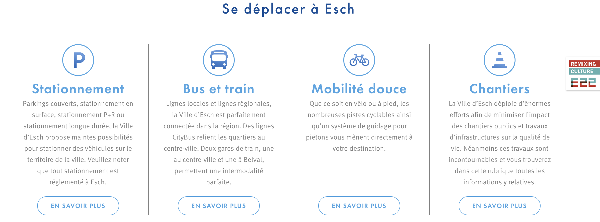De nombreuses pages ont une couleur de fond mal définie, comme la page d'accueil, les Mentions légales, le Plan du site...
Contenu compréhensible sans les styles : ordre visible vs ordre réel
Un utilisateur aveugle n'a pas accès à la mise en forme qui parfois est porteuse d'informations importantes, notamment des relations entre les éléments.
Il est important de ne pas implémenter les textes dans l'ordre visuel, mais bien dans l'ordre logique de dépendance et hiérarchie des éléments.
Le contenu doit rester compréhensible sans les feuilles de styles (vous pouvez tester vos contenus en désactivant les feuilles de styles).
Constats sur le site
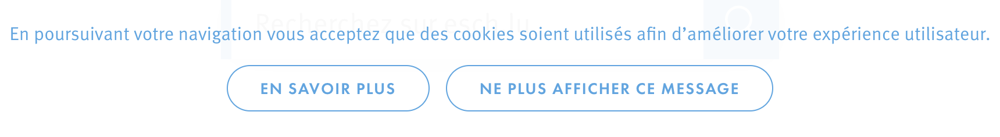Le bandeau des cookies n'est pas le premier élément tabulable de la page. Le bandeau doit toujours être positionné en haut de page dans le code, mais peut être placé en bas de page visuellement.
Agrandissement des tailles de texte
Certaines personnes déficientes visuelles, également des personnes ayant des difficultés de lecture comme les personnes dyslexiques, ont besoin d'adapter la taille du texte à l'écran.
L'agrandissement des caractères ne doit pas provoquer de perte d'informations. À 200%, le contenu doit rester lisible et compréhensible, toutes les informations doivent rester présentes.
Il existe plusieurs méthodes pour contrôler l'agrandissement des caractères :
- La fonction d'agrandissement du texte du navigateur (le zoom texte) ;
- Les fonctions de zoom graphique du navigateur ;
- Un composant d'interface propre au site permettant d'agrandir le texte ou de zoomer.
Constats sur le site
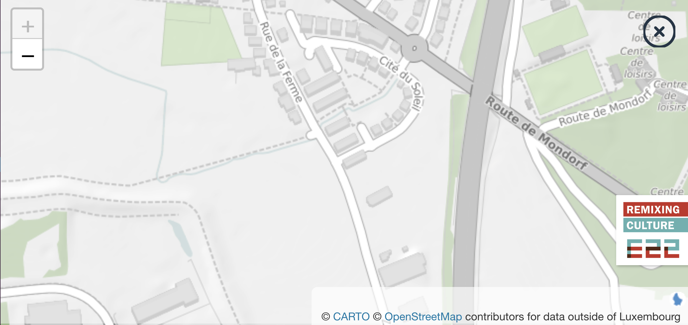Dans la page les lieux d'Esch, avec un zoom à 200%, la carte prend tout l'espace. Il n'y a donc plus d'accès possible à la liste des lieux.
Visibilité de la prise de focus
Les personnes avec un handicap moteur qui naviguent au clavier peuvent rencontrer des difficultés considérables à utiliser du contenu si elles ne sont pas en mesure de repérer l'indication visuelle du focus et ses déplacements.
Constats sur le site
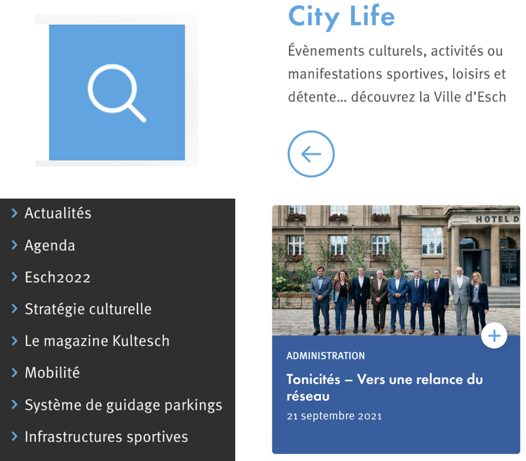La prise de focus n'est pas visible sur de nombreux éléments des différentes pages, comme le bouton d'envoi de la recherche, le bloc « City Life » et « L'Administration », les articles à la une ou encore certains liens du pied de page de la page d'accueil.
Information donnée par la forme, la taille ou la position
Les utilisateurs qui ne perçoivent pas la mise en forme (utilisateurs aveugles par exemple) n'auront pas accès aux informations véhiculées par la mise en forme, la taille (taille du texte pour signifier un degré d'importance par exemple), ou la position (une consigne indiquant de cliquer en haut à droite par exemple). Il est nécessaire de fournir un équivalent textuel qui permette d'offrir la même information aux utilisateurs aveugles.
Constats sur le site
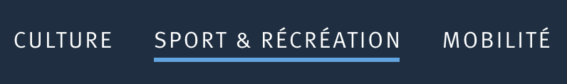Lorsque nous sommes dans la page Détail lieux, l'onglet actif est uniquement indiqué par la couleur.
Largeur réduite
Il s'agit ici de tester la capacité des contenus à se réorganiser lorsqu'un utilisateur malvoyant doit réaliser un zoom graphique de 400%. À ce titre, on teste la lisibilité des contenus dans une fenêtre de largeur réduite à 320px.
On s'assure que l'utilisateur a accès à tous les contenus et que tous les contenus sont lisibles sans avoir recours à la barre de défilement horizontale.
Constats sur le site
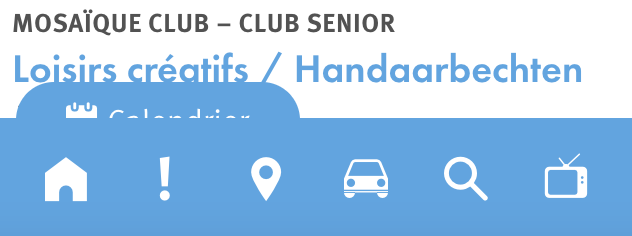Dans la page Agenda, avec une fenêtre réduite à 320px, le bouton « Calendrier » est masqué par la toolbar.
Paramètres typographiques
Les utilisateurs malvoyants et/ou dyslexiques ont souvent recours à des adaptations de la présentation des textes. Pour cela, on doit s'assurer que de tels paramètres ne viennent pas perturber leur lecture sur le site.
Les présentations doivent supporter l'application de paramètres typographiques visant à augmenter les interlignages, interlettrages, les espaces entre les mots et entre les paragraphes. L'application de ces paramètres ne doit pas entraîner la perte de contenus ou de fonctionnalité :
- L'interlignage augmenté de 1,5 fois la taille de la police
- L'espacement entre les paragraphes augmenté de 2 fois la taille de la police
- L'espacement des lettres augmenté de 0,12 fois la taille de la police
- L'espacement des mots augmenté jusqu'à 0,16 fois la taille de la police
Constats sur le site
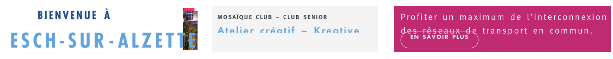Lorsque les paramètres typographiques sont modifiés, dans la page d'accueil, le texte « Esch-sur-Alzette« dépasse de son conteneur, dans la page Agenda, les textes du bloc « Événements continus« sont coupés, et dans la page Se déplacer, les textes des paragraphes débordent parfois sur le lien « en savoir plus« .
Contenus additionnels au survol et au focus
Les contenus additionnels qui apparaissent au survol ou à la prise de focus (par exemple, un menu déroulant, une infobulle d'information) peuvent être contrôlés par l'utilisateur. Par exemple, les utilisateurs malvoyants utilisateurs de loupes d'écran peuvent déclencher l'affichage accidentel des contenus qui apparaissent au survol et ces affichages non désirés perturbent la consultation pour ces utilisateurs. L'utilisateur doit alors disposer d'un moyen simple pour les masquer et continuer sa consultation.
Également, en utilisant une loupe d'écran, il est probable que le contenu additionnel soit en fait apparu en dehors de la zone de zoom de la loupe, l'utilisateur doit pouvoir survoler le contenu additionnel à la souris.
Constats sur le site
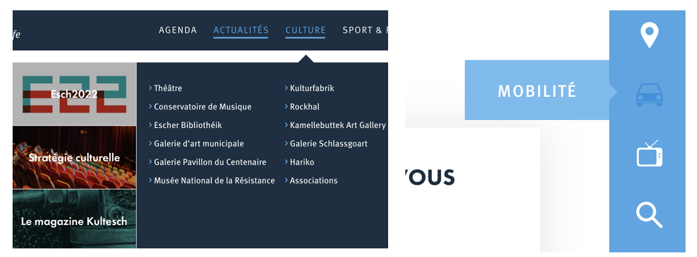Les sous-onglets des différents menus ou bien les textes qui s'affichent au survol de la toolbar ne sont pas contrôlables par l'utilisateur (comme avoir la possibilité de masquer la zone affichée avec la touche Echap.
Formulaires
Recommandation :
Associer pour chaque formulaire chacun de ses champs à son étiquette, grouper les champs dans des blocs d'informations de même nature, regrouper les items de même nature dans les listes de choix, donner à chaque bouton un intitulé explicite. Vérifier la présence d'aide à la saisie, s'assurer que le contrôle de saisie est accessible et que l'utilisateur peut contrôler les données à caractère financier, juridique ou personnel.
Étiquettes et champs
Les champs de formulaires doivent tous posséder des étiquettes correctement reliées.
Une étiquette de champ est un texte situé à proximité du champ de formulaire qui permet de connaître la nature, le type ou le format des informations attendues.
De cette manière, lorsqu'un utilisateur entre dans le champ de saisie avec un lecteur d'écran, le lecteur d'écran lit le contenu de l'étiquette. L'utilisateur comprend alors ce qu'il doit saisir.
Sans cela, même si une étiquette est présente visuellement, l'utilisateur entendra « champ de saisie vide » en entrant dans le champ et ne saura donc pas quoi saisir.
Constats sur le site
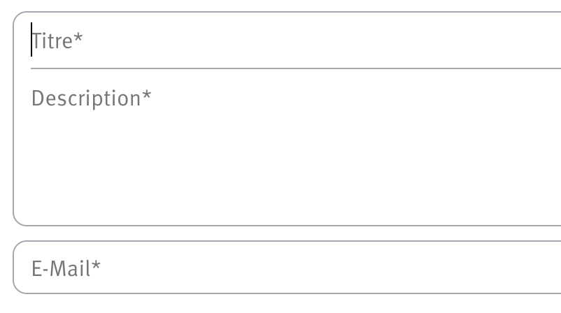Dans la page Chantiers et alertes, les différents champs du formulaire « Report it » n'ont pas d'étiquette.
Intitulés de bouton pertinents
Les boutons qui permettent d'interagir avec les formulaires doivent avoir des intitulés pertinents pour que l'utilisateur comprenne l'action du bouton.
Ces intitulés sont essentiels pour les personnes aveugles, afin qu'elles soient sûres de l'action qu'elles s'apprêtent à réaliser.
Constats sur le site
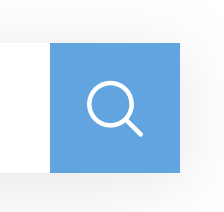Le bouton de validation du moteur de recherche n'a pas d'intitulé.
Contrôle de saisie et aide à la saisie
Tous les champs obligatoires doivent être identifiés préalablement à toute validation de l’utilisateur.
Pour les champs qui attendent un format de saisie particulier pour être validés, ce format doit être spécifié à l’utilisateur par un passage de texte visible à proximité du champ. De plus, si l’utilisateur commet une erreur sur ce champ, alors le message d’erreur doit présenter un exemple réel de saisie.
Enfin, les messages d'erreur de saisie des champs de formulaire doivent être liés correctement aux champs en erreur.
Constats sur le site
Dans la page Chantiers et alertes, il n'y a pas de mention indiquant les champs obligatoires, ni d'indication sur le type de format attendu (champ email notamment).
Identification des données attendues
Certains utilisateurs qui ont des troubles d'accès au langage verbal (paralysie cérébrale, aphasie par exemple) auront des difficultés à accéder au sens des termes écrits. Ainsi, pour leur permettre de remplacer les étiquettes présentes dans les formulaires par des étiquettes (verbales ou imagées) qu'ils connaissent, il est nécessaire d'identifier les champs avec un attribut particulier, de sorte qu'une technologie d'assistance pourra réaliser la personnalisation du formulaire nécessaire à l'utilisateur.
L'identification de ces champs permet également aux utilisateurs d'employer des outils pour remplir automatiquement les champs identifiés avec des valeurs de l'utilisateur.
On ne va rechercher que les champs qui attendent une donnée personnelle. Le RGAA demande d'utiliser l'attribut autocomplete et il fournit l'ensemble des valeurs possibles pour l'attribut.
Constats sur le site
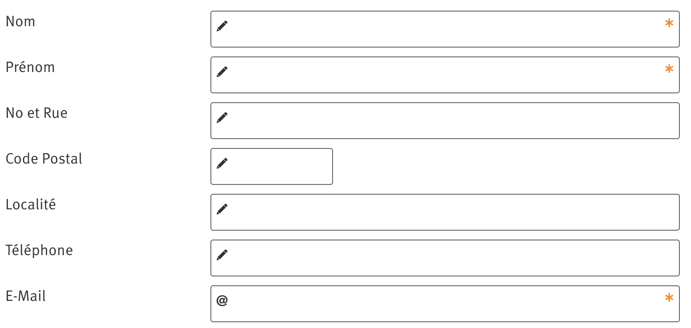On note l'absence d'attribut autocomplete sur les différents champs de données personnelles (champs nom, prénom...) dans le formulaire de la page Contact.
Navigation
Recommandation :
Faciliter la navigation dans un ensemble de pages par au moins deux systèmes de navigation différents (menu de navigation, plan du site ou moteur de recherche), un fil d'Ariane et l'indication de la page active dans le menu de navigation. Identifier les groupes de liens importants et la zone de contenu et donner la possibilité de les éviter par des liens de navigation interne. S'assurer que l'ordre de tabulation est cohérent et que la page ne comporte pas de piège au clavier. S'assurer que les raccourcis clavier qui utilisent une seule touche sont contrôlables par l'utilisateur.
Systèmes de navigation
Le RGAA demande qu'un site propose au moins deux systèmes de navigations différents. Prévoir deux systèmes de navigation au moins est important, car :
- tous les utilisateurs ne naviguent pas de la même manière ;
- certains systèmes de navigation peuvent s'avérer trop complexes à utiliser, en particulier pour les personnes qui ont recours à des technologies d'assistance. Par exemple, un menu de navigation trop riche, comme un méga-menu, peut nécessiter beaucoup d'actions pour un utilisateur qui navigue exclusivement au clavier, et donc rendre sa recherche d'information très laborieuse.
Par systèmes de navigation, on entend tout procédé permettant une navigation dans le site ou dans une page, parmi :
- un menu de navigation principal ;
- un plan du site ;
- un moteur de recherche.
Note : un moteur de recherche est considéré comme un moyen de navigation s'il indexe toutes les pages du site (y compris les pages de type « Mentions légales » ou « Politique de confidentialité »), et non pas seulement un choix limité (par exemple, seulement les offres tarifaires).
Le plan du site, s’il est présent, doit être représentatif de l’arborescence du site et ne proposer que des liens fonctionnels.
Constats sur le site
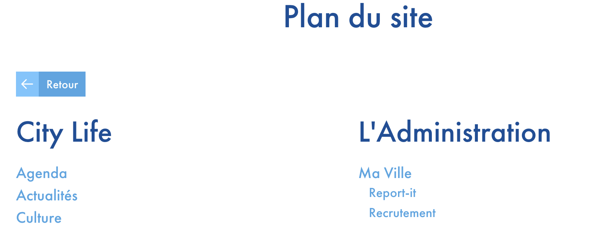Le plan du site atteignable depuis la page d'accueil n'est pas représentatif du site, car certaines pages sont manquantes, comme la page Contact ou la page Mentions légales.
Aussi, on remarque la présence de certains liens qui ne sont pas fonctionnels, comme « Sportförderprogramm ».
Liens d'accès rapide
On note l'absence d'un lien d'accès rapide au contenu au moins. Les liens d'accès rapides sont utiles aux utilisateurs qui naviguent au clavier, mais aussi aux utilisateurs malvoyants qui utilisent une loupe d'écran afin de sauter rapidement les éléments redondants, comme la navigation.
Pour cela, il est préférable que ces liens soient toujours visibles à l'écran. Malgré cela, ces liens peuvent être positionnés hors écran, mais doivent au moins être rendus visibles à la prise de focus.
Il est donc nécessaire d'implémenter au moins un lien d'accès rapide au contenu, qui permet de sauter toute la navigation principale.
Constats sur le site
Il n'y a pas de liens d'accès rapide dans les différentes pages de l'échantillon.
Landmarks ARIA
Pour fournir des points de repère aux utilisateurs aveugles, il faudra également implémenter les landmarks ARIA sur les balises HTML 5 de la page.
Constats sur le site
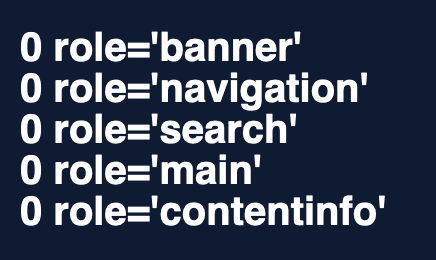On note l'absence de rôle défini dans la page Contact.
Ordre de tabulation
La navigation dans les contenus peut être considérablement compliquée pour les personnes aveugles ou les personnes handicapées motrices qui naviguent au clavier si l'ordre de tabulation n'est pas cohérent.
L'ordre de tabulation est déterminé par l'ordre des éléments dans le code HTML. Il ne suit pas forcément l'ordre de lecture de la page ou de l'écran, mais il doit être cohérent en fonction de la nature des contenus et des fonctionnalités.
Constats sur le site
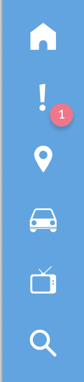Dans les pages Article à la une ou encore Événement, la navigation se fait d'abord sur tout le contenu de la page, puis se fait ensuite sur la toolbar (après le pied de page).
Consultation
Recommandation
Vérifier que l'utilisateur a le contrôle des procédés de rafraîchissement, des changements brusques de luminosité, des ouvertures de nouvelles fenêtres et des contenus en mouvement ou clignotants. Ne pas faire dépendre l'accomplissement d'une tâche d'une limite de temps sauf si elle est essentielle et s'assurer que les données saisies sont récupérées après une interruption de session authentifiée. Proposer des versions accessibles ou rendre accessibles les documents en téléchargement. S'assurer que la consultation n'est pas dépendante de l'orientation de l'écran. Toujours proposer un geste simple en alternative d'un geste complexe permettant de réaliser une action.
Documents en téléchargement
Assurez-vous que chaque document soit accessible (cf. les Guides de créations de documents bureautiques accessibles), ou qu'il dispose d'une alternative accessible proposant le même contenu (par exemple, une version HTML correctement structurée).
Constats sur le site
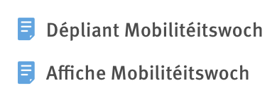Les PDF présents dans la page Article à la Une (« Dépliant Mobilitéitswoch » et « Affiche Mobilitéitswoch ») ne sont pas accessibles.
Gestes complexes
Certaines personnes handicapées motrices ne peuvent pas réaliser de gestes complexes, elles utilisent généralement des technologies d'assistance qui leur permettent d'interagir uniquement avec un geste simple comme cliquer sur un bouton par exemple.
Dans ces situations, il est indispensable que le site ou l'application propose pour chaque fonctionnalité basée sur un geste complexe une alternative au moyen d'un geste simple.
Le geste complexe nécessite l'utilisation d'un contact multipoint, comme par exemple, utiliser deux doigts pour zoomer ou dézoomer, ou tracer une trajectoire.
Le geste simple peut être un contact sur un seul point ou toute variation multiple de ce contact (double clic, etc.).
Constats sur le site
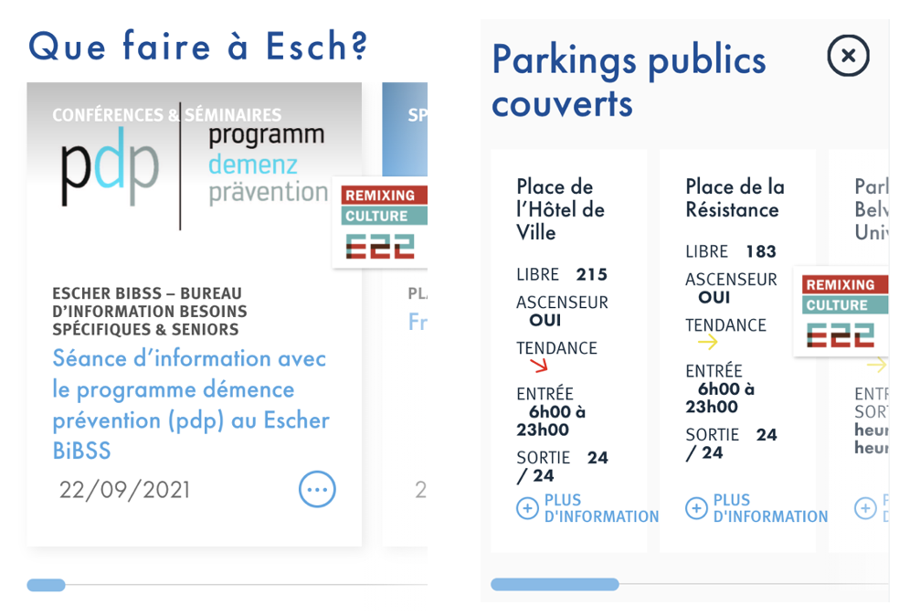Dans la Page d'accueil et la page Se déplacer en version réduite, un geste complexe est nécessaire pour atteindre les blocs suivants.